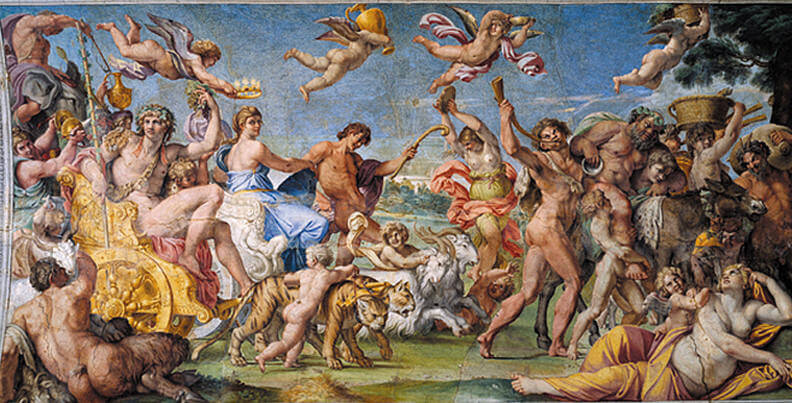

Barocco è il termine utilizzato per indicare una temperie estetica, ideologica e culturale sorta in Italia tra la fine del XVI e l'inizio del XVII secolo, e dall'Italia propagatasi in tutta Europa nel mondo delle arti, della letteratura, della musica, e in numerosi altri ambiti, fino alla metà del XVIII secolo.
